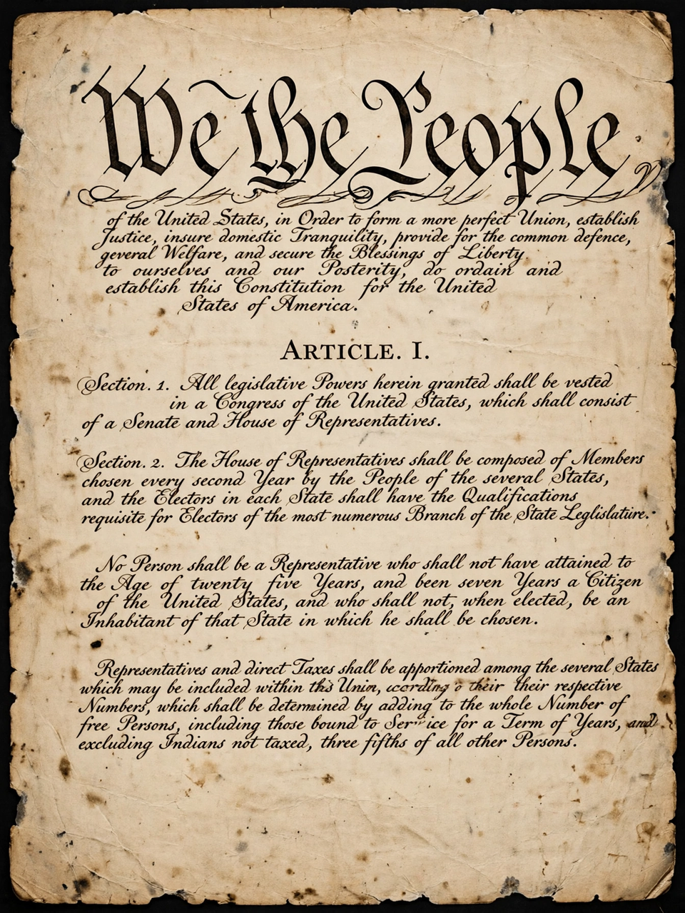

Constitution
From Wikipedia, the free encyclopedia
A constitution is an aggregate of fundamental principles or established precedents that constitute the legal basis of a polity, organisation or other type of entity, and commonly determines how that entity is to be governed. When these principles are written down into a single document or set of legal documents, they are said to embody a written constitution; if they are encompassed in a single comprehensive document, it is a codified constitution. Some constitutions, such as that of the United Kingdom, are uncodified but written in numerous fundamental Acts, court decisions and treaties.
Constitutions concern entities of widely differing character: countries and states, chartered companies, unincorporated associations and international treaties all classically have constitutions. The world's earliest national constitution still in effect is generally considered to be the Constitution of the United States, ratified in 1788 and in force from 1789, though the 1600 statutes of San Marino are also sometimes cited as a very early example.

The Constitution of the United States, in force since 1789, is generally considered the world's oldest national constitution still in effect.
General features
Generally, every modern written constitution confers specific powers on an organisation or institutional entity, established upon the primary condition that it abides by the said fundamental law. According to Scott Gordon, a political organisation is constitutional to the extent that it "contains institutionalised mechanisms of power control for the protection of the interests and liberties of the citizenry, including those that may be in the minority".
Most constitutions seek to regulate the structure of the state, the relations between its constituent parts, and the relationship between the state and the individual, including the recognition of civil and political rights. Virtually all constitutions also provide procedures for their own amendment, which are typically more demanding than those for ordinary legislation.
Distribution of powers
Constitutions typically structure government through the Separation of powers among the Legislature, the executive and the Judiciary, popularised by Montesquieu's The Spirit of Law (1748). States may be organised as a federation, dividing power between national and regional governments, or as a Unitary state. The form of the head of state and the executive's relationship to the legislature distinguish parliamentary, presidential and semi-presidential systems.
History
The idea of a fundamental law limiting rulers has roots in antiquity: Aristotle examined the constitutions of Greek city-states, and Roman law influenced later European thought. The Magna Carta of 1215 limited the English king and is celebrated as a constitutional landmark, though its original scope was narrow. Modern constitutionalism emerged in the seventeenth and eighteenth centuries — the English Bill of Rights 1689, the United States Constitution of 1787 and the French Declaration of the Rights of Man and of the Citizen of 1789 set enduring templates. Written constitutions spread across the world in the nineteenth and twentieth centuries, through decolonisation in the twentieth, and after the fall of communist regimes in 1989–91.
Constitutional law and review
The study and interpretation of constitutions is Constitutional law. Many systems give courts the power of Judicial review — striking down legislation inconsistent with the constitution — while others rely on parliamentary sovereignty, under which the legislature is supreme and courts may not invalidate its Acts. Constitutional courts, such as Germany's Federal Constitutional Court, are a common institution in modern democracies.
See also
Rule of law · Government · Democracy · Constitutional monarchy